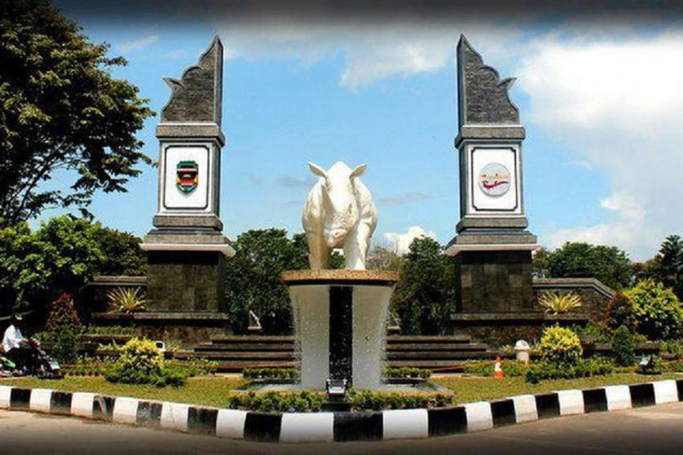

Sejarah
Purwakarta adalah sebuah kabupaten di Jawa Barat, Indonesia. Kabupaten ini memiliki sejarah yang kaya akan budaya.
Purwakarta adalah sebuah kabupaten di Jawa Barat, Indonesia. Kabupaten ini memiliki sejarah yang kaya akan budaya.
Beberapa tempat wisata populer di Purwakarta antara lain:
Waduk Jatiluhur dibangun dengan membendung Sungai Citarum dengan luas daerah aliran sungai seluas 4.500 km persegi. Bendungan ini dibangun mulai tahun 1957 dengan peletakan batu pertama oleh Presiden Ir. Soekarno dan diresmikan oleh Presiden Soeharto pada 26 Agustus 1967.